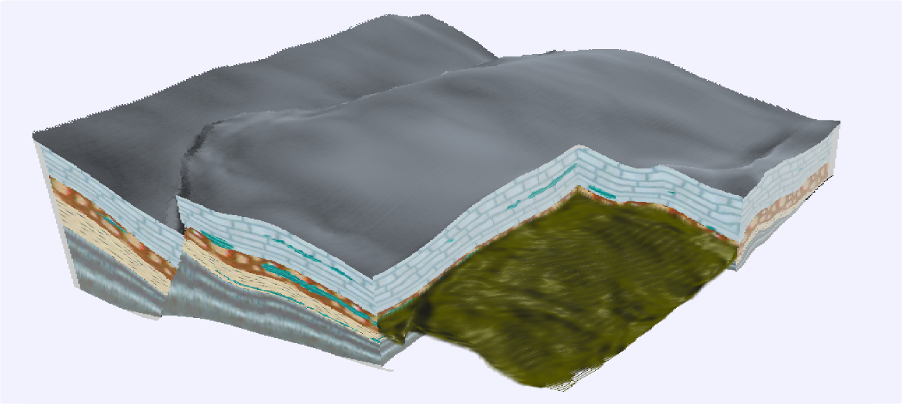
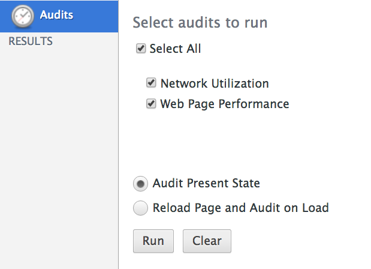
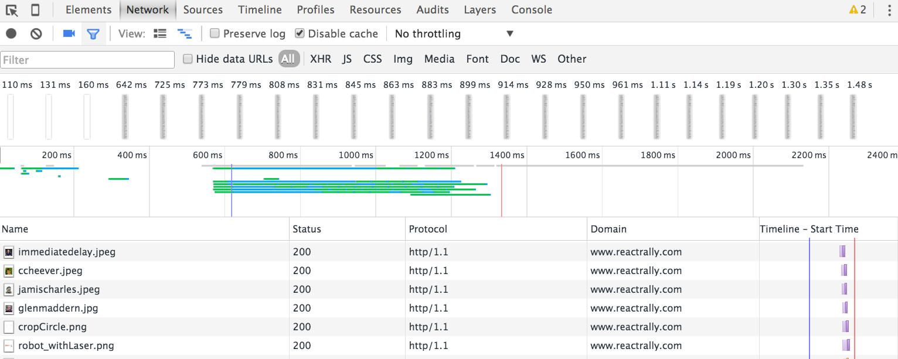
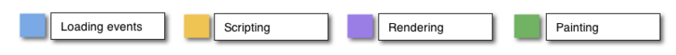
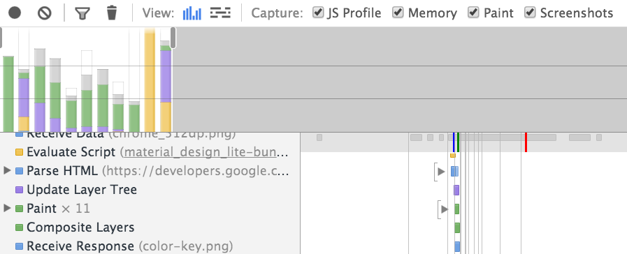
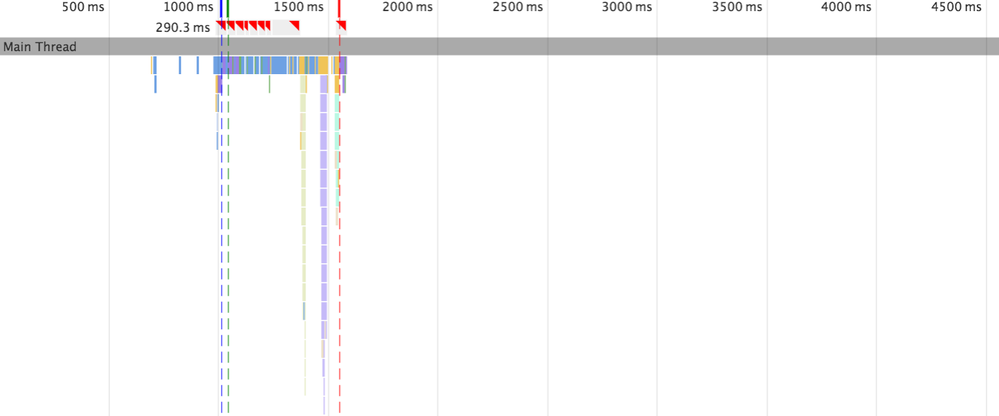
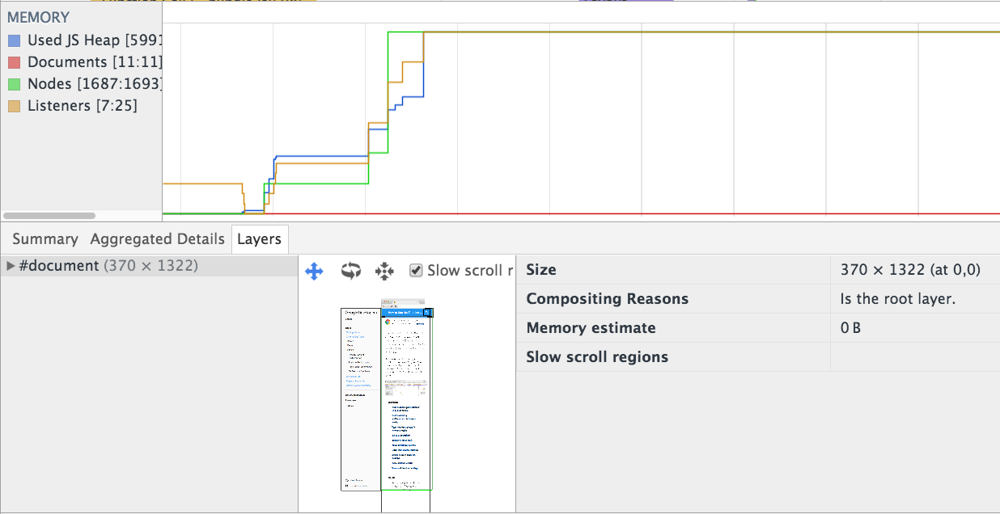
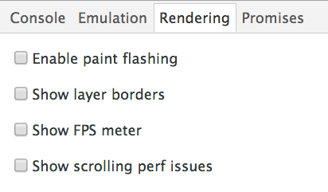
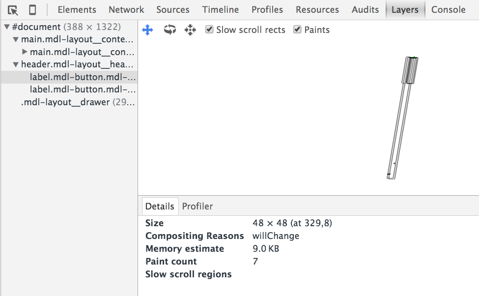

성능 개선
Created by 손찬욱 / chanuk.son
성능 개선 전략
1. 목표 설정
RAIL
2. 개선 작업
측정
분석
최적화
적용
측정 -> 분석 -> 최적화 -> 적용 -> 측정 -> 분석 -> 최적화 -> 적용 -> 측정 -> 분석 -> 최적화 -> 적용 ...
3. 지속적인 관심
성능 지표 자동 측정
성능 개선하는 작업
“What you can measure, you can optimize”
Web 성능 개선 포인트
Network

Rendering
Rendering

Compute
Network Panel
Timeline Panel, Layer Panel, Rendering Panel
Profile
Audits 패널
사이트 검사
https://developers.google.com/speed/pagespeed/insights/ Network 패널
시간별 HTTP Request - waterfall chart
screenshot
Timeline 패널
브라우저 동작 상태를 확인할수 있다
1. FrameView
프레임 단위별 확인
2. Frame Chart View
thread별 stack
3. Memory / Layer / ...
메모리 사용 내역와 레이어 상태
Rendering 패널
브라우저 동작시 랜더링 요소를 파악할수 있다.
Profile 패널
주로 Memory leak 문제를 해결하기 위해 사용한다.
console.profile/profileEnd
확장 패널
chrome://flags/#enable-devtools-experiments
Layer Panel
